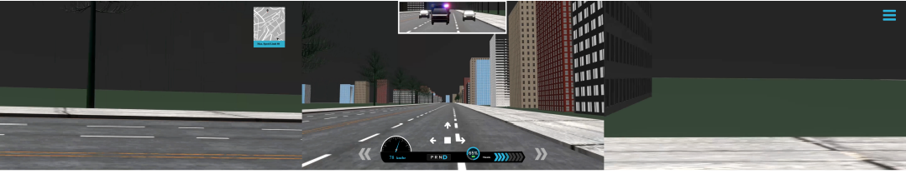
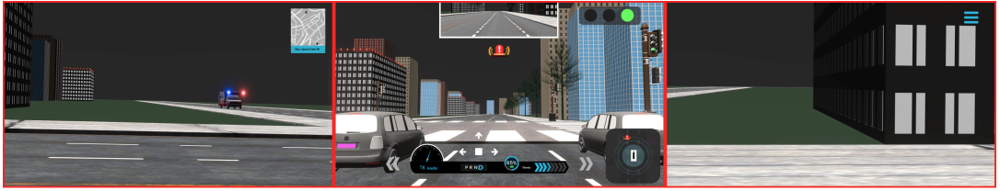

Teleoperation — Results
Impact of auditory and multimodal feedback on emergency takeover decisions.
Audio Only
Pure auditory feedback
Audio → Visual
Symbolic on-screen alerts
Primary Statistical Result
No statistically significant differences
One-way ANOVA: F = 0.27, p = .76
Response Time
n.s.
ANOVA
Errors
n.s.
ANOVA
SART
n.s.
ANOVA
Overall Effect
Trends
no sig.
Fastest
Audio only
Comparable
Audio → visual
Slowest
Audio + visual
Qualitative Insights
“Audio alone was enough to understand what was happening.”
“With both audio and visuals, I didn’t know where to focus.”
More information is not always better: audio-only feedback enabled the clearest and fastest decisions.